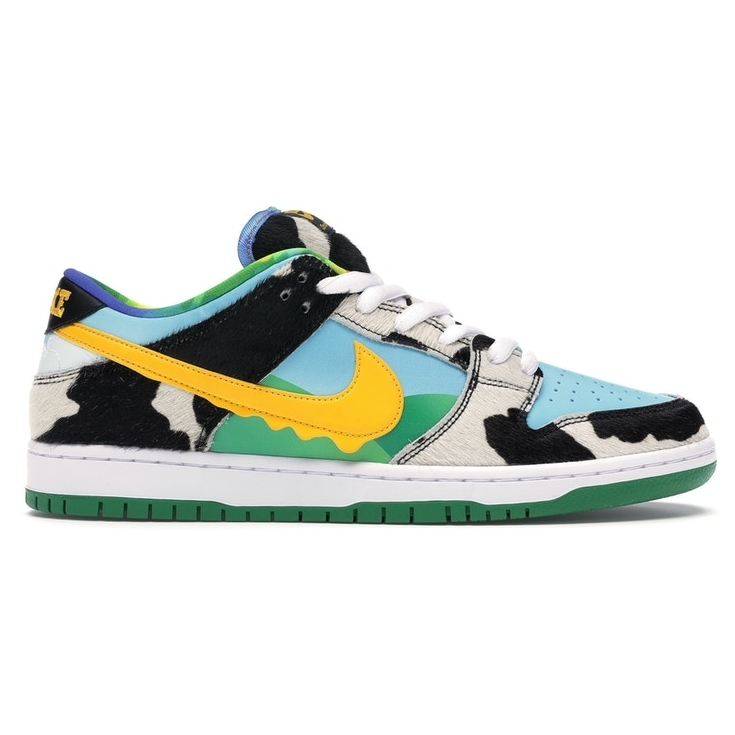

NIKE x BEN & JERRY'S
"Chunky Dunky"
SB Dunk Low
Feito em colaboração com Ben & Jerry's, o Nike Dunk Low SB 'Chunky Dunky' replica a embalagem usada para o sabor Chunky Monkey da marca de sorvetes.
R$ 10.230,00 ADICIONAR AO CARRINHO
